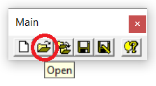
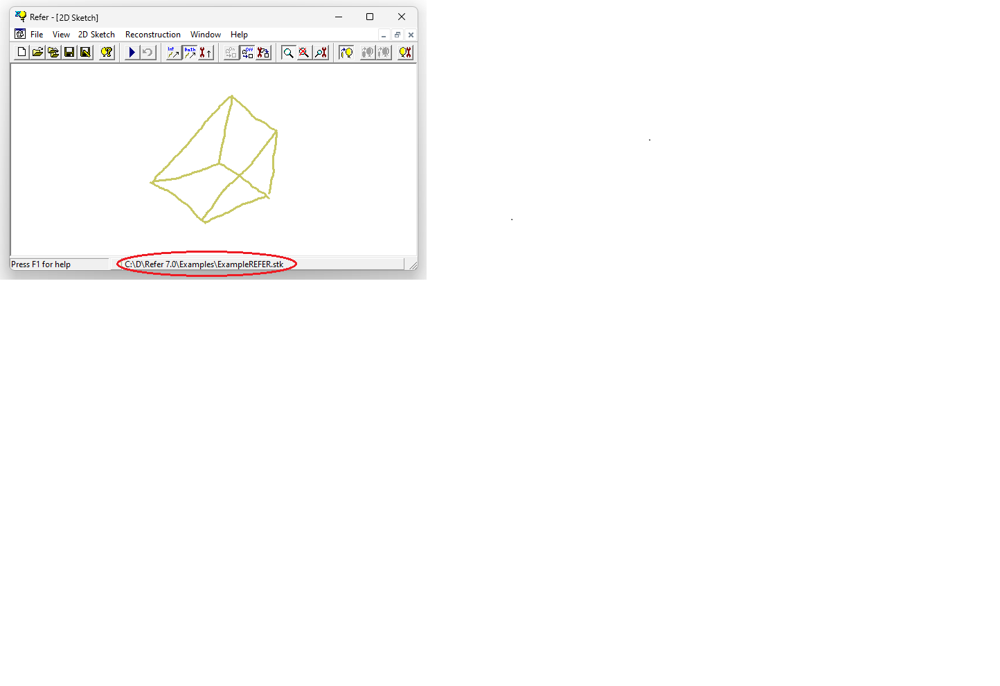

1.5.4.4 Open File
In the main toolbar, click open to use a previously created file.

Select the desired file from the windows explorer(1)(2). Three types of files are supported by REFER (see Input Formats).NOTES:
(1) Only sketch files are listed by default. Select the "All Files" filter option in the Windows Explorer dialog to select other file types.(2) The full path of the opened file will be displayed in the Status Bar:
